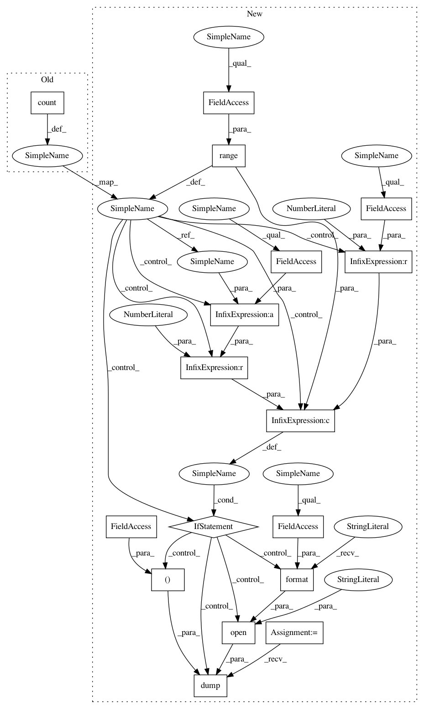

1b13fc95c046cb94c591c3cbbd5b5abed641bf27,examples/ppo_gym.py,,main_loop,#,106
Before Change
def main_loop():
generate multiple trajectories that reach the minimum batch_size
for i_iter in count():
memory = Memory()
num_steps = 0
After Change
def main_loop():
generate multiple trajectories that reach the minimum batch_size
for i_iter in range(args.max_iter_num):
memory = Memory()
num_steps = 0
reward_batch = 0
num_episodes = 0
while num_steps < args.min_batch_size:
state = env.reset()
// state = running_state(state)
reward_episode = 0
for t in range(10000):
state_var = Variable(Tensor(state).unsqueeze(0))
action = policy_net.select_action(state_var)[0].cpu().numpy()
action = int(action) if is_disc_action else action.astype(np.float64)
next_state, reward, done, _ = env.step(action)
reward_episode += reward
// next_state = running_state(next_state)
mask = 0 if done else 1
memory.push(state, action, mask, next_state, reward)
if args.render:
env.render()
if done:
break
state = next_state
// log stats
num_steps += (t+1)
num_episodes += 1
reward_batch += reward_episode
reward_batch /= num_episodes
batch = memory.sample()
update_params(batch, i_iter)
if i_iter % args.log_interval == 0:
print("Iter {}\tLast reward: {:.2f}\tAverage reward {:.2f}".format(
i_iter, reward_episode, reward_batch))
if args.save_model_interval > 0 and i_iter % args.save_model_interval == 0:
pickle.dump((policy_net, value_net), open("../assets/learned_models/{}_ppo.p".format(args.env_name), "wb"))
main_loop()
In pattern: SUPERPATTERN
Frequency: 3
Non-data size: 17
Instances
Project Name: lcswillems/torch-rl
Commit Name: 1b13fc95c046cb94c591c3cbbd5b5abed641bf27
Time: 2017-10-20
Author: khrylx@gmail.com
File Name: examples/ppo_gym.py
Class Name:
Method Name: main_loop
Project Name: lcswillems/torch-rl
Commit Name: 1b13fc95c046cb94c591c3cbbd5b5abed641bf27
Time: 2017-10-20
Author: khrylx@gmail.com
File Name: examples/a2c_gym.py
Class Name:
Method Name: main_loop
Project Name: lcswillems/torch-rl
Commit Name: 1b13fc95c046cb94c591c3cbbd5b5abed641bf27
Time: 2017-10-20
Author: khrylx@gmail.com
File Name: examples/trpo_gym.py
Class Name:
Method Name: main_loop
Project Name: lcswillems/torch-rl
Commit Name: 1b13fc95c046cb94c591c3cbbd5b5abed641bf27
Time: 2017-10-20
Author: khrylx@gmail.com
File Name: examples/ppo_gym.py
Class Name:
Method Name: main_loop